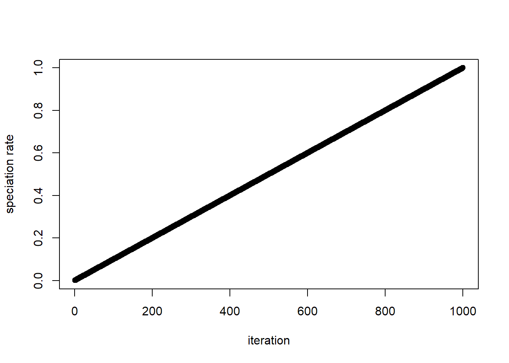

roleR Use Cases
Jacob Idec
2023-02-28
roleR_use_cases.RmdThis document shows off various use cases using the current implementation of roleR
Overview
Install from GitHub
Run a model and plot species richness over time
p <- roleParams(individuals_local = 100, individuals_meta = 1000, species_meta = 100,
speciation_local = 0.1, speciation_meta = 0.1, extinction_meta = 0.05, dispersal_prob = 0.1,
trait_sigma=1, env_sigma=1, comp_sigma = 0.5, neut_delta=1, env_comp_delta=1,
mutation_rate=0,equilib_escape = 1, alpha=50, num_basepairs = 250,
init_type = 'oceanic_island', niter = 1000, niterTimestep = 10)
model <- runRole(roleModel(p))
stats <- getSumStats(model,funs=list(rich=richness)) #TODO add default where all existing sumstats are added
ggplot(stats, aes(iteration, rich)) +
geom_line()
Parameter Creation
Create a set of parameters specifying every one
p <- roleParams(individuals_local = 100, individuals_meta = 1000, species_meta = 100,
speciation_local = 0.1, speciation_meta = 0.1, extinction_meta = 0.05, dispersal_prob = 0.1,
trait_sigma=1, env_sigma=1, comp_sigma = 0.5, neut_delta=1, env_comp_delta=1,
mutation_rate=0,equilib_escape = 1, alpha=50, num_basepairs = 250,
init_type = 'oceanic_island', niter = 1000, niterTimestep = 10)Create a set of params per the Unified Neutral Theory of Biodiversity (UNTB). This creates a “UNTB-flavored” RoLE model
p_untb <- untbParams(individuals_local = 100, individuals_meta = 1000,
species_meta = 50,
speciation = 0.2,
dispersal_prob = 0.1, init_type = 'oceanic_island',
niter = 1000, niterTimestep = 100) See the roleParams documentation for descriptions of all available parameters
Group Question: Should default parameters exist so that simply p <- roleParams() creates a valid params? If so what should the defaults be?
Model & Experiment Creation & Running
Create a model (not yet run) using the params, then run it
Create an experiment (not yet run) containing two models created using both sets of params, then run it. Experiment running can be parallelized on Windows, Mac, & Linux by specifying the number of cores to use. When you run an experiment, it runs every model within it.
exp <- roleExperiment(list(p,p_untb))
library(parallel)
exp <- runRole(exp,cores=2)Experiments are intended to encapsulate one or more hypotheses through comparison of multiple varying models contained within them
Group Question: Is encapsulating multiple models as experiments useful, or would you rather deal with models individually in your use cases?
Extracting Data From Models
Get a summary stats over time for a single model, each row being a different saved iteration state. Available raw stats are rawAbundance, rawSpAbundance, rawTraits, rawGenDiv, rawBranchLengths, and rawApePhylo. Available transformed stats are hillAbund, hillGenetic, hillTrait, hillPhylo, and richness.
stats <- getSumStats(model, list(rich = richness,hill_abund=hillAbund))
stats## rich hill_abund_1 hill_abund_2 hill_abund_3 hill_abund_4 iteration
## 1 1 1.000000 1.000000 1.000000 1.000000 0
## 2 2 1.057599 1.020200 1.015189 1.013491 10
## 3 3 1.166301 1.062248 1.046743 1.041448 20
## 4 4 1.182582 1.062473 1.046747 1.041448 30
## 5 6 1.377968 1.130710 1.097249 1.085999 40
## 6 6 1.377968 1.130710 1.097249 1.085999 50
## 7 6 1.552092 1.204819 1.151927 1.133995 60
## 8 6 1.552092 1.204819 1.151927 1.133995 70
## 9 6 1.595092 1.230315 1.171138 1.150825 80
## 10 8 1.780161 1.286339 1.211282 1.185830 90
## 11 8 1.854392 1.315443 1.232217 1.204038 100
## 12 14 2.650590 1.551350 1.397343 1.346516 110
## 13 13 2.622997 1.551350 1.397360 1.346517 120
## 14 12 2.669039 1.588310 1.423906 1.369288 130
## 15 13 2.744076 1.590331 1.423976 1.369291 140
## 16 16 3.467181 1.807011 1.570608 1.494016 150
## 17 16 3.351236 1.761184 1.539347 1.467517 160
## 18 16 3.467181 1.807011 1.570608 1.494016 170
## 19 16 3.333747 1.760563 1.539325 1.467516 180
## 20 13 3.118923 1.755002 1.539117 1.467507 190
## 21 16 3.833847 1.954652 1.670952 1.578763 200
## 22 18 4.311784 2.120441 1.782375 1.672291 210
## 23 17 4.395207 2.179599 1.822307 1.705648 220
## 24 19 5.241087 2.515091 2.045833 1.891394 230
## 25 17 4.871375 2.434275 1.997126 1.851454 240
## 26 19 5.812892 2.756340 2.202900 2.020632 250
## 27 18 5.983269 2.847380 2.260085 2.067219 260
## 28 19 5.847433 2.759382 2.203124 2.020649 270
## 29 21 5.983455 2.688172 2.149221 1.975932 280
## 30 19 6.254305 2.937720 2.319044 2.115639 290
## 31 18 6.190991 2.942908 2.319867 2.115733 300
## 32 19 6.879845 3.246753 2.514516 2.273807 310
## 33 18 6.914254 3.346720 2.584747 2.331099 320
## 34 17 6.914814 3.448276 2.658052 2.390938 330
## 35 17 7.532543 3.924647 2.988472 2.659364 340
## 36 18 7.819985 4.065041 3.082312 2.734878 350
## 37 17 7.775524 4.269855 3.267590 2.894100 360
## 38 16 7.948529 4.562044 3.487179 3.073346 370
## 39 19 8.545324 4.492363 3.384991 2.983248 380
## 40 21 9.535127 4.878049 3.623950 3.173129 390
## 41 20 8.438775 4.314064 3.270105 2.894246 400
## 42 21 8.726428 4.444444 3.370195 2.979608 410
## 43 21 8.903257 4.549591 3.463755 3.065441 420
## 44 24 9.726058 4.757374 3.584345 3.161790 430
## 45 23 9.914331 4.901961 3.693735 3.257831 440
## 46 24 10.356311 5.096840 3.823819 3.364159 450
## 47 26 10.640099 5.102041 3.823316 3.364063 460
## 48 29 12.568287 5.910165 4.307225 3.737528 470
## 49 29 11.903194 5.353319 3.885847 3.382708 480
## 50 29 12.751651 5.707763 4.056470 3.503485 490
## 51 28 11.437683 4.878049 3.518902 3.077913 500
## 52 28 11.687293 5.186722 3.755261 3.274851 510
## 53 29 12.712458 5.681818 4.049081 3.501549 520
## 54 27 12.342883 5.827506 4.188613 3.620413 530
## 55 28 12.086306 5.605381 4.041138 3.500587 540
## 56 27 11.121485 5.005005 3.636003 3.174908 550
## 57 27 10.129694 4.468275 3.289474 2.897638 560
## 58 26 9.597287 4.280822 3.182004 2.813809 570
## 59 27 9.810910 4.416961 3.282767 2.896654 580
## 60 28 10.266878 4.591368 3.392697 2.984396 590
## 61 26 9.441094 4.266212 3.181424 2.813892 600
## 62 29 10.571834 4.629630 3.398217 2.985306 610
## 63 30 11.146208 4.694836 3.405895 2.986417 620
## 64 26 9.988937 4.472272 3.291611 2.898123 630
## 65 26 10.028472 4.612546 3.398806 2.985599 640
## 66 27 9.721426 4.409171 3.282236 2.896582 650
## 67 26 9.796317 4.664179 3.491513 3.073410 660
## 68 24 9.726809 4.960317 3.731032 3.271814 670
## 69 25 11.026807 5.910165 4.446509 3.869424 680
## 70 25 11.794519 6.510417 4.933116 4.299078 690
## 71 24 11.783518 6.944444 5.332291 4.645426 700
## 72 23 11.167746 6.501951 5.027983 4.418738 710
## 73 25 12.584398 7.440476 5.653960 4.881899 720
## 74 26 12.640804 7.299270 5.567597 4.838750 730
## 75 26 12.286347 6.868132 5.243585 4.592890 740
## 76 27 12.879308 7.267442 5.523092 4.811058 750
## 77 26 12.302481 6.963788 5.370448 4.730432 760
## 78 30 13.996393 7.418398 5.541378 4.813510 770
## 79 31 14.079563 7.396450 5.535771 4.812452 780
## 80 29 14.081533 8.116883 6.275052 5.525676 790
## 81 28 13.287037 7.518797 5.798100 5.107046 800
## 82 24 12.396368 7.541478 5.912504 5.236808 810
## 83 25 12.993829 7.587253 5.822817 5.113456 820
## 84 25 13.895228 8.503401 6.524947 5.679297 830
## 85 26 14.715053 8.880995 6.714586 5.786604 840
## 86 26 15.035594 9.310987 7.092020 6.102843 850
## 87 24 13.979092 8.591065 6.490223 5.570997 860
## 88 26 14.313591 8.375209 6.231770 5.333629 870
## 89 24 13.193846 7.716049 5.733696 4.907196 880
## 90 26 13.716002 7.836991 5.772541 4.921279 890
## 91 26 15.019237 9.276438 6.943775 5.899979 900
## 92 27 15.611846 9.689922 7.282411 6.191619 910
## 93 27 15.496819 9.487666 7.028672 5.933558 920
## 94 28 16.195773 9.746589 7.105973 5.956811 930
## 95 29 17.188118 10.438413 7.550235 6.284465 940
## 96 29 16.838798 10.548523 7.847060 6.590835 950
## 97 27 16.966675 11.061947 8.275492 6.947318 960
## 98 29 16.980641 10.438413 7.737769 6.532130 970
## 99 31 17.964659 10.729614 7.826845 6.565469 980
## 100 31 17.920208 10.162602 7.172560 5.965626 990
## 101 31 18.917588 11.682243 8.443706 6.994927 1000Get summary stats over time for one model of an experiment
stats <- getSumStats(exp@modelRuns[[1]], list(hill_abund=hillAbund)) Create a custom summary statistic and extract it
speciesWith5Indv <- function(x){return(sum(x@localComm@spAbund > 4))}
stats <- getSumStats(exp@modelRuns[[1]], list(sp_with_5=speciesWith5Indv)) Group Question: Any ideas for more default summary stats we could add?
Group Question: Besides plotting model data over model iterations, any plotting functions you would want?
Extracting Data From Experiments
Get a dataframe containing all saved timesteps of all models in the experiment
stats <- getSumStats(exp, list(hill_abund=hillAbund)) Get a dataframe containing model metadata in the experiment, where each row is an experiment with its associated params
exp_model_params <- exp@experimentMeta Get transformed summary stats (such as the mean of a stat at an iteration for multiple models) from an experiment (WIP)
# stats <- getSumStats(exp, list(hill_abund_itermean=hillAbundItermean))
## where hillAbundItermean is a function that applies across an experiment rather than across a roleData Group Question: Are transformed summary stats summarized from multiple models useful? Any other multiple-model-summarizing functions other than mean? Also let us know if this concept is unclear, it is a little confusing.
Parameter Priors & Iter-Functions (NOT CURRENT)
Functions can be set that sample params at every iteration step
A prior is any function that takes no inputs and returns a parameter value
Change one parameter to be sampled from a normal distribution every iteration
An iter-function takes an iteration number and returns a parameter value
Change one parameter to increase linearly every iteration
p@speciation_local <- function(iter){return(iter * 0.001)}
plot(1:1000 * 0.001,xlab = "iteration",ylab = "speciation rate") 
Create a simple piecewise function where a param changes during some iterations
#p@env_sigma <- function(iter){
# if(iter > 400 & iter < 600){
# return(0.75)
# }
# else{
# return(0.5)
# }
# } Group Question: What are some ways in which you would want to vary parameters? Do priors and iterfuncs capture the kind of parameter variability you would want?
Group Question: We are considering two ways of handling priors and iterfuns. The first is allow the parameter slot to include either a vector or a function as in the example. The second is have an additional class called roleFunctions that would overwrite params it contains, for the purpose of avoiding confusion that could be caused by a multiple-class slot. Let us know if you have any feelings about these!
Simulating Genetic Diversities (NOT CURRENT)
Add genetic diversities to a run model by backwards time simulation using msprime
#model <- simulateSpeciesGenDiv(model) Experiment Organization
Tag models in an experiment for comparison between different tags
Set metadata of experiment within the object, which is exported when saving
exp@authorMeta <- c("author"="Jacob Idec","description"="dummy model")Group Question: Is this basic metadata sufficient? Should the description be split up into more specific parts?
Writing and Loading
Write and load models, experiments, and params
writeRole(exp,dir="",filename="test",save_txt = T)
#exp <- readRDS("test.roleexperiment")